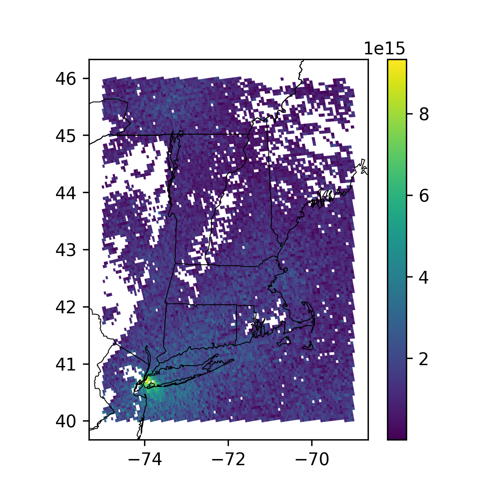

Note
Go to the end to download the full example code
GIS TropOMI Processing¶
Get TropOMI from RSIG and save as GeoJSON and shapefiles.

/opt/hostedtoolcache/Python/3.12.3/x64/lib/python3.12/site-packages/pycno/__init__.py:187: UserWarning: Path does not exist: /home/runner/.pycno; default .
warnings.warn('Path does not exist: ' + str(data) + '; default .')
/opt/hostedtoolcache/Python/3.12.3/x64/lib/python3.12/site-packages/pycno/__init__.py:535: UserWarning: Downloading: https://www.giss.nasa.gov/tools/panoply/overlays/MWDB_Coasts_NA_1.cnob to MWDB_Coasts_NA_1.cnob
warnings.warn('Downloading: ' + url + ' to ' + str(datapatho))
import matplotlib.pyplot as plt
import geopandas as gpd
from shapely import polygons
import pyrsig
import pycno
coordkeys = [
'Longitude_SW(deg)', 'Latitude_SW(deg)',
'Longitude_SE(deg)', 'Latitude_SE(deg)',
'Longitude_NE(deg)', 'Latitude_NE(deg)',
'Longitude_NW(deg)', 'Latitude_NW(deg)',
'Longitude_SW(deg)', 'Latitude_SW(deg)',
]
cno = pycno.cno()
# Retrieve data from RSIG (or cache)
datakey = "tropomi.offl.no2.nitrogendioxide_tropospheric_column"
bdate = "2023-07-23"
bbox = (-75, 40, -69, 46)
api = pyrsig.RsigApi(bbox=bbox)
# Either ascii or xdr backend works, xdr is faster
tropdf = api.to_dataframe(datakey, bdate=bdate, backend='xdr')
geom = polygons(tropdf[coordkeys].values.reshape(-1, 5, 2))
gtropdf = gpd.GeoDataFrame(
tropdf.drop(columns=coordkeys), geometry=geom, crs=4326
)
# Make Plot
col = 'nitrogendioxide_tropospheric_column(molecules/cm2)'
fig, ax = plt.subplots(figsize=(4, 4), dpi=300)
gtropdf.plot(col, edgecolor="face", linewidth=0.1, legend=True, ax=ax)
cno.drawstates(ax=ax, resnum=1)
fig.savefig(f'{datakey}_{bdate}.png')
# Save as a GIS Format
gtropdf.to_file(f'{datakey}_{bdate}.geojson')
# Shapefiles prefer short names
gtropdf.rename(columns={
'Timestamp(UTC)': 'time_utc',
'LATITUDE(deg)': 'lat_center',
'LONGITUDE(deg)': 'lon_center',
col: 'no2_trop',
}).to_file(f'{datakey}_{bdate}.shp')
Total running time of the script: ( 0 minutes 8.499 seconds)